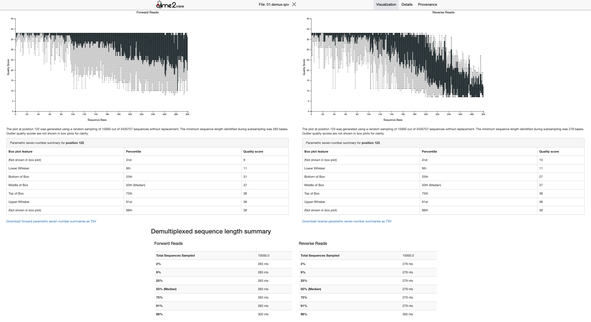

Amplicones 16S
Análisis de amplicones
El análisis de amplicones, también llamado meta-taxonomía y mal llamado metagenómica. Se usa ampliamente para conocer la diversidad taxonómica de un ambiente. Se amplifica y secuencía una región de cada organismo que se encuentra en la comunidad. Estos marcadores pueden ser los genes ribosomales 16S, 18S, ITS o el COI, etc.
Existen diversas herramientas para analizar este tipo de datos como Mothur, USEARCH, VSEARCH, Deblur, AMPtk, DADA2 en R, QIIME2, etc.
En este taller vamos a usar Qiime2 con DADA2 para inferir las ASVs
Cómo se infieren las ASVs?
DADA2 es una herramienta para procesar secuencias de amplicones, corrige errores de secuenciación para obtener secuencias de variantes de amplicones exactas (ASVs). Sus pasos principales incluyen: filtrado y recorte de secuencias, aprendizaje del modelo de error, inferencia de secuencias, fusión de pares (si aplica), y eliminación de quimeras. Finalmente, las ASVs obtenidas son clasificadas taxonómicamente.
QIIME2
Qiime2 (Quantitative Insights Into Microbial Ecology) es un pipeline desarrollado para el análisis de metataxonomía (Bolyen et al., 2019). Contiene herramientas para limpiar secuencias, agrupar, asignar taxonomía, reconstruir filogenias, inferir métricas de diversidad, abundancia diferencial, etc. Es de código abierto, posee una interfaz gráfica amigable, mucha documentación, tutoriales y foros de ayuda.

Obtengamos los datos:
# ve a tu $HOME
cd
# crea el directorio para amplicones y un subdirectorio src
mkdir -p taller_amplicones_pozol/src
# entra al directorio de amplicones
cd taller_amplicones_pozol
# copia los datos
cp -r /home/alumno1/taller_amplicones_pozol/data .Limpieza
Aunque dentro de qiime se puede hacer la limpieza de los adaptadores, también podemos hacerlo por fuera con cutadapt.
Vamos a crear el directorio de resultados de cutadapt
mkdir -p results/01.cutadapt
out="results/01.cutadapt"
for FILE in $(ls data/*.gz | sed 's/_.*//' | sed 's/data\///' | sort -u); do
cutadapt -m 200 --pair-filter any --no-indels \
-g CCTACGGGNGGCWGCAG -G GACTACHVGGGTATCTAATCC -Z -j 4 \
-o $out/"${FILE}_1.fastq.gz" -p $out/"${FILE}_2.fastq.gz" data/"${FILE}_R1.fastq.gz" data/"${FILE}_R2.fastq.gz"
doneCrear Manifest
Ahora que tenemos los fastq sin adaptadores vamos a importarlos a QIIME2, para esto necesitamos crear un archivo manifest con la información de la ubicación de los datos a analizar, para ello crea el script `src/create_manifest.sh`
nano src/create_manifest.shCopia y pega el siguiente contenido en `src/create_manifest.sh` :
#!/usr/bin/bash
#Create manifest file
cd results/01.cutadapt
id=$(ls *.gz | sed 's/_.*//g' | sort -u)
echo -e "sample-id"",""absolute-filepath"",""direction" > ../../data/manifest.csv
for sample in $id; do
source=$(awk -F"\t" -v sample="$sample" '$1 == sample {print $1}' ../../data/metadata.tsv)
r1=$(echo -e $sample"_1.fastq.gz"",""forward")
r2=$(echo -e $sample"_2.fastq.gz"",""reverse")
path=$(pwd)
echo -e $source","$path"/"$r1 >> ../../data/manifest.csv
echo -e $source","$path"/"$r2 >> ../../data/manifest.csv
doneEjecuta el script:
bash src/create_manifest.shImportar los datos
Bien, ahora ya tenemos el archivo manifest que es necesario para importar a QIIME2. Vamos a hacerlo … pero primero a crear el directorio de resultados de qiime.
mkdir -p results/02.qiime#importar data
qiime tools import --type 'SampleData[PairedEndSequencesWithQuality]'\
--input-path data/manifest.csv \
--output-path results/02.qiime/01.demux.qza\
--input-format 'PairedEndFastqManifestPhred33'#convertir qza a qzv
qiime demux summarize --i-data results/02.qiime/01.demux.qza --o-visualization results/02.qiime/01.demux.qzvDescarga el archivo qzv en tu computadora y vizualizalo en la página Qiime2view. Veras algo como esto:

Ya que visualizamos la calidad y el número de lecturas que tienen las muestras, procederemos a eliminar el ruido y hacer el agrupamiento con DADA2.
Eliminación de ruido y agrupamiento con Dada2
Antes de comenzar el denoising , veamos la ayuda.
qiime dada2 denoise-paired --i-demultiplexed-seqs --helpComo habrás notado, es necesario tomar decisiones basadas en la calidad de nuestras lecturas para definir los valores de truncado. Es muy importante dener en cuenta la longitud de las lecturas y del amplicón deseado para tener una idea de la longitud del sobrelape que se obtendría.
Toma en cuenta lo siguiente:
(longitud lectura Fordware) + (longitud lectura Reverse) − (longitud del amplicon) −
(longitud lectura Fordware − --p-trunc-len-f value) − (longitud lectura Reverse − --p-trunc-len-r value)
= sobrelapePara hacer el denoising y agrupamiento con DADA2 ejecutemos lo siguiente:
qiime dada2 denoise-paired --i-demultiplexed-seqs results/02.qiime/01.demux.qza --p-trunc-len-f 280 --p-trunc-len-r 250 --o-representative-sequences results/02.qiime/03.rep-seqs_v1.qza --o-table results/02.qiime/03.feature-table_v1.qza --o-denoising-stats results/02.qiime/03.denoising-stats_v1.qza --p-n-threads 10Veamos los estadísticos de lo que se pudo agrupar.
qiime tools export --input-path results/02.qiime/03.denoising-stats_v1.qza --output-path results/02.qiime/03.denoising-stats_v1Reúnanse en equipos, revisen la ayuda, discutan y generen una versión 2 de denoising. Obtengan sus estadísticas, comparen los resultados y expongan sus conclusiones en la presentación que corresponde.
https://drive.google.com/drive/folders/1iKfhMz_JdfImmsCmkPg10r-NC-nrzhQ4?usp=sharing
Para comparar puedes correr la siguiente línea
head results/02.qiime/03.denoising-stats_v*/stats.tsvAsignación taxonómica
En qiime podemos hacer la anotación taxonómica usando diferentes aproximaciones. Nosotros usaremos sklearn para esto, en el taller usaremos una base datos ya entrenada para las regiones V3-V4. El código para que tú entrenes la base de datos de acuerdo a la región que te interesa lo puedes encontrar en esta página. O en la página de QIIME suele estar una base ya entrenada para la región V4 que puedes descargar aquí.
Vamos a hacer la asignación taxonómica:
qiime feature-classifier classify-sklearn \
--i-classifier data/dbs/classifier_silva_138_trained.qza \
--i-reads results/02.qiime/03.rep-seqs_v1.qza \
--o-classification results/02.qiime/taxonomy.qza --p-n-jobs 10Y podemos generar archivos para visualizar los resultados
# Visualizar la taxonomía
qiime metadata tabulate \
--m-input-file results/02.qiime/taxonomy.qza \
--o-visualization results/02.qiime/taxonomy.qzv# Visualizar las secuencias representativas
qiime feature-table tabulate-seqs \
--i-data results/02.qiime/03.rep-seqs_v1.qza \
--o-visualization results/02.qiime/03.rep-seqs_v1.qza.qzv# visualizar la tabla de conteos
qiime feature-table summarize \
--i-table results/02.qiime/03.feature-table_v1.qza \
--o-visualization results/02.qiime/03.feature-table_v1.qzvDescarga los archivos qzv en tu computadora y visualízalos en la página Qiime2view
Opcionalmente te dejamos un link con scripts para hacer filtros subsecuentes, como eliminar secuencias que son potenciales artefactos, remover cloroplastos o mitocondria.
Exportemos a formato legible por R,
qiime tools export --input-path results/02.qiime/03.feature-table_v1.qza --output-path results/02.qiime/exported-feature-tableqiime tools export --input-path results/02.qiime/taxonomy.qza --output-path results/02.qiime/exported-taxonomyVisualicemos en R
Y ahora si viene lo divertido, vamos a visaulizar nuestros resultados …
Abre tu editor en Rstudio
Importemos los datos de qiime a R como un objeto Phyloseq
#cargar librerias e instalar si no esta
if (!requireNamespace("BiocManager", quietly = TRUE))
install.packages("BiocManager")
BiocManager::install(version = "3.19")
library(BiocManager)
BiocManager::install(c("IRanges", "S4Arrays", "SparseArray", "GenomicRanges", "SummarizedExperiment", "SingleCellExperiment", "TreeSummarizedExperiment"))
devtools::install_github("jbisanz/qiime2R")
library(devtools)
devtools::install_github("jbisanz/qiime2R")
library(qiime2R)
library(phyloseq)
#crear objeto phyloseq
ps <- qza_to_phyloseq(
features = "results/02.qiime/03.feature-table_v1.qza",
taxonomy = "results/02.qiime/taxonomy.qza",
metadata = "data/metadata.tsv")Obtengamos información del objeto phyloseq
library(devtools)
library(microbiome)
#check data
microbiome::summarize_phyloseq(ps)
#Delete singletons
ps2 <- filter_taxa(ps, function(x) sum(x) > 2, TRUE)
ps2
#check
microbiome::summarize_phyloseq(ps2)Hagamos un chequeo rápido del esfuerzo de muestreo
library(vegan)
mat <- as(t(otu_table(ps2)), "matrix")
raremax <- min(rowSums(mat))
system.time(rarecurve(mat, step = 1000, sample = raremax,
col = "purple4", label = TRUE))Veamos el objeto phyloseq en un objeto Ampvis
library(ampvis2)
library(dplyr)
otu_table_ampvis <- data.frame(OTU = rownames(phyloseq::otu_table(ps2)@.Data),
phyloseq::otu_table(ps2)@.Data,
phyloseq::tax_table(ps2)@.Data,
check.names = FALSE)
meta_data_ampvis <- data.frame(phyloseq::sample_data(ps2),
check.names = FALSE
)
# change index to SampleID
meta_data_ampvis <- meta_data_ampvis %>% rownames_to_column(var = "SampleID")
# finalmente generamos el objeto ampvis
av2 <- amp_load(otu_table_ampvis, meta_data_ampvis)Visualicemos las abundancias en un heatmap
#heatmap
Genus_av2_abundance_plot <- amp_heatmap(av2,
facet_by = "sampleID",
plot_values = TRUE,
plot_values_size = 4,
tax_show = 20,
tax_aggregate = "Genus",
tax_add = c("Phylum"),
plot_legendbreaks = c(1, 5, 5))
Genus_av2_abundance_plotDiversidad alfa
Diversidad beta
Recursos externos
Si quieres profundizar en el análisis de amplicones te recomendamos visitar el canal de youtube y/o los cursos y asesorias de microbioma-lab.